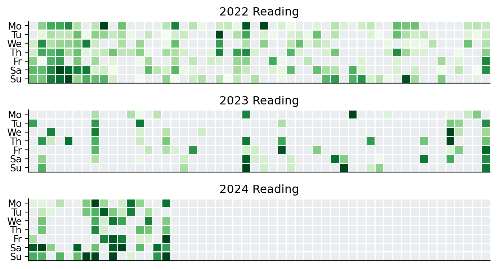

Home
My Reading
Newsletter
Reading Journey
Reading journey and notes about books
Summary of Reading

Figure 1: Reading done for all books recorded
Order By
Default
Title
Author
Title
Author
Acoustic and Auditory Phonetics
Algorithms to Live By
Arrival (Stories of Your Life MTI)
Death’s End
Disability Visibility
Dune
Exhalation: Stories
Generative Deep Learning, 2nd Ed
Generative Deep Learning: Teaching Machines to Paint, Write, Compose, and Play
Hello World: Being Human in the Age of Algorithms
High Performance Computing
How Google Works
How to Speak Whale
Humble Pi
In the Land of Invented Languages
Infectious Generosity
Nudge: The Final Edition
Other Minds
Practical Fairness
Project Hail Mary: A Novel
Python Data Science Handbook
Reinforcement Learning
Remarkably Bright Creatures: A Novel
Software Engineering at Google
Swearing is Good for You
Talking Hands
The Candy House: A Novel
The Creative Act: A Way of Being
The Dark Forest
The Infinite Gift
The Little Book of Deep Learning
The Making of the Atomic Bomb
The Precipice
The Three-Body Problem
Things to Make and Do in the Fourth Dimension
This Is How You Lose the Time War
Through the Language Glass
Turtles All the Way Down
Weapons of Math Destruction
What If
building an anonymization pipeline
No matching items